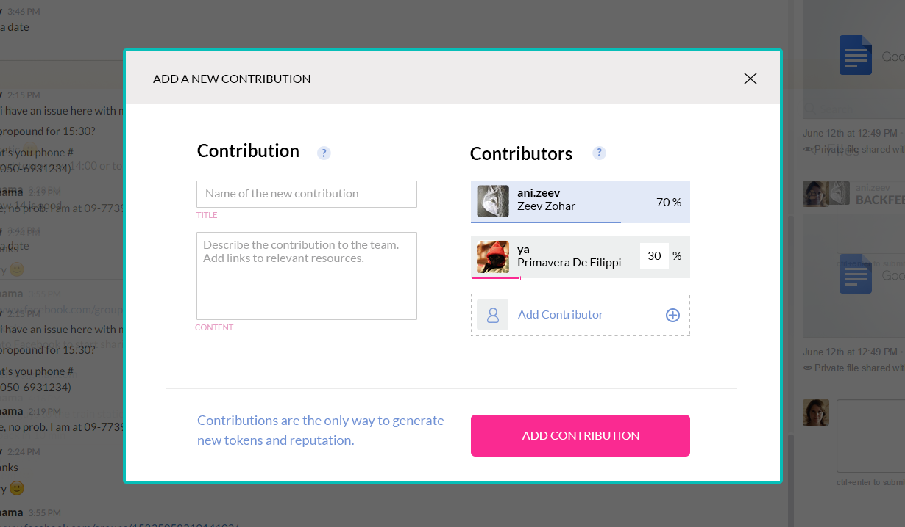
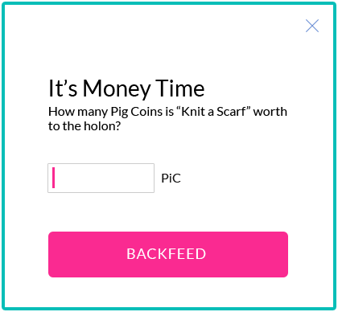
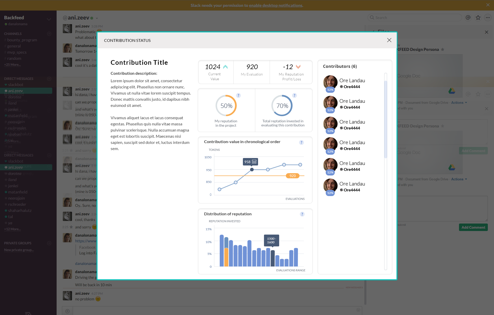
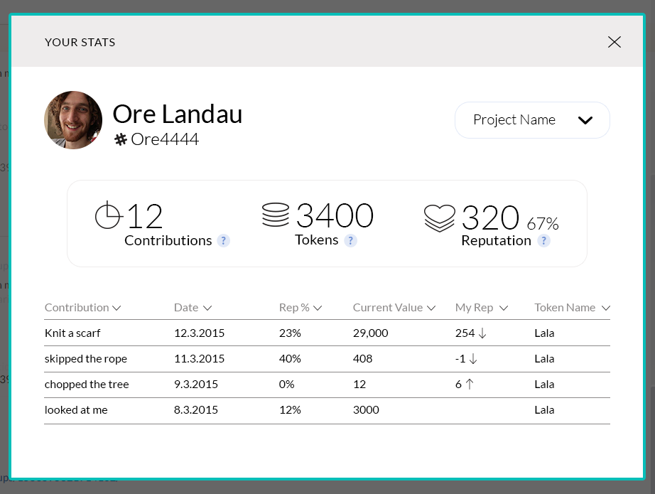
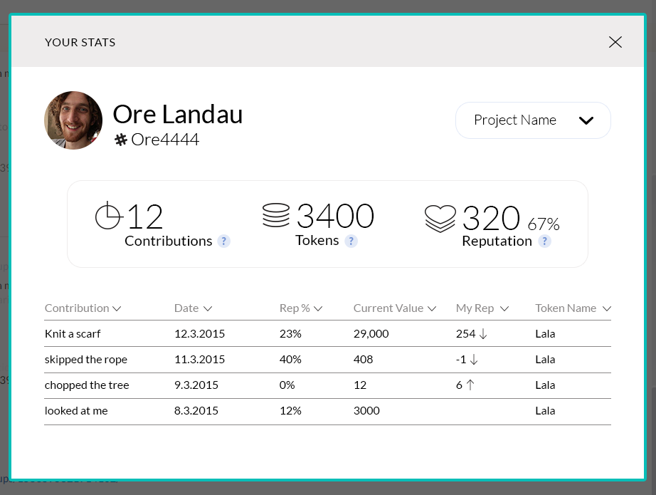
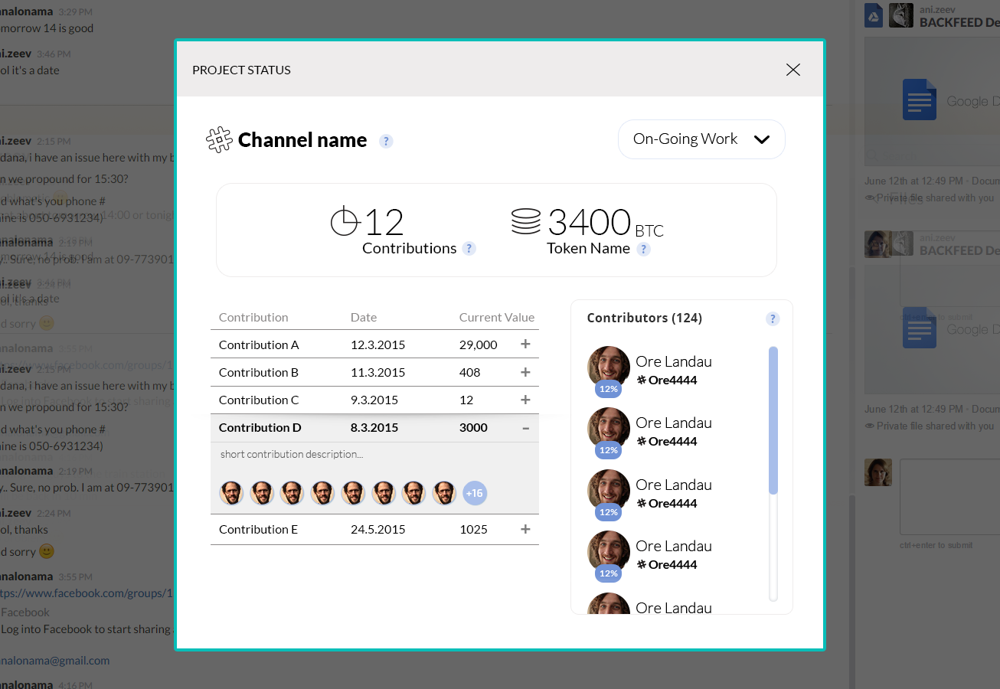

BackFeed Chrome Extension Slack Client
The Backfeed Chrome Extension enables value and reputation distribution according to the Backfeed model and protocols from within the Slack interface.
Main Functionality
A tool for a team to self govern by peer evaluation of contributions. We achieve this by Integrating an evaluation layer above Slack that will enable these actions directly from Slack:
Submit a contribution
Browse contributions (using Slack native search for now)
Evaluate a contribution 
View a contribution status 
View a member’s status
 
Start a project

Submit a Milestone

Project Status 
keep collaborators updated and in sync with the valuation process by posting activities into Slack.